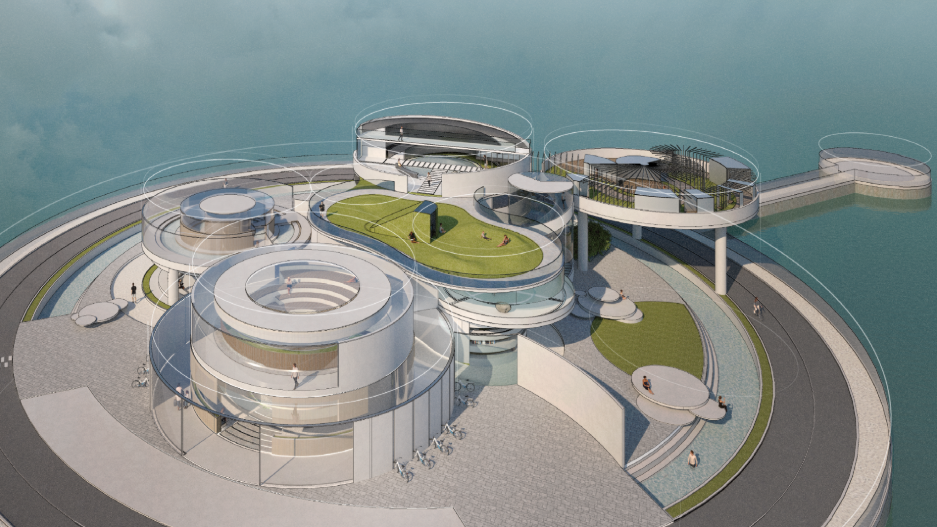

Interior Design Portfolio
9GU9G9G9G
A quiet interior design portfolio shaped by structure, light, material texture, and carefully paced daily movement.
01 Circulation defines the first impression.
02 Low light softens the edges of a room.
03 Material surfaces hold tactile memory.
04 Furniture follows the rhythm of daily use.
05 Empty walls leave room for seasonal change.
06 Private homes need pockets of quiet space.
07 Commercial rooms need clear visual flow.
08 Lighting reveals form and hides excess.
09 Color is a relationship, not a single mood.
10 Storage works best as a calm background.
11 Floor texture changes the speed of movement.
12 Metal, wood, and textile create temperature.
13 Small rooms benefit from strong alignment.
14 Large rooms need low, precise details.
15 Each project begins by recording site light.
16 Lifestyle lasts longer than a floor plan.
17 Window position shapes the furniture language.
18 Neat finishes support complex routines.
19 Good rooms extend time before explanation.
20 We design density of living, not only scenes.
21 A narrow entry can still feel generous.
22 Shadows clarify the depth of quiet surfaces.
23 Built-in pieces keep the room visually steady.
24 Each corner needs a reason to exist.
25 Soft partitions hold privacy without closing space.
26 Mirrors should extend light, not decorate noise.
27 A table can become the center of the plan.
28 Ceiling lines guide attention across the room.
29 The best materials age with calm confidence.
30 Door handles mark the scale of the hand.
31 Open shelves need rhythm, depth, and restraint.
32 A room feels larger when its edges are clear.
33 Hidden light gives furniture a softer outline.
34 Texture can replace unnecessary ornament.
35 A good plan protects both movement and pause.
36 The quietest detail often holds the whole space.
37 Natural light changes the project every hour.
38 Proportion is the invisible material of a room.
39 We edit until the room can breathe on its own.
40 Interior design begins after the first drawing.